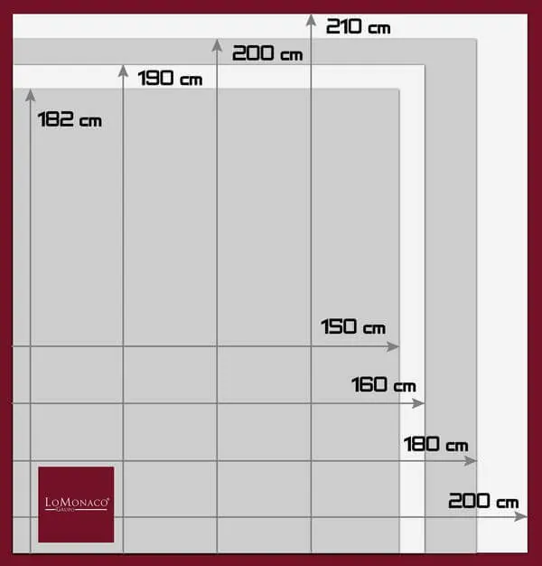

Colchones de medidas especiales
Es decir, irse a vivir en pareja suponía pasar de “la cama de solter@” de 80 o 90 cm, a descansar en un espacio sensiblemente inferior. De este mismo modo, las camas individuales, también crecen, viéndose incrementada la compra de medidas superiores a los estándares de 80 y 90 para pasar a medidas de 105 o incluso de 120 cm. ¿Y el largo? ¿Acaso es menos importante? Como imaginarás la respuesta es un rotundo “no”, lo que hace efectivamente especial a este tipo de colchones es la conjunción ancho/largo, llegándose incluso a ampliar el catálogo del fabricante de colchones, con medidas que antes ni siguiera se contemplablan (210 cm).
Esta tendencia de dormir en camas más grandes, importada de países anglosajones, centroeuropeos y norteamericanos, responde a varios motivos:
-Un avance de nuestro país en la cultura del descanso, considerándose, que a mayor espacio personal para descansar y dormir dentro de la propia cama, se gana en calidad de sueño.
-Los españoles cada vez somos más altos, sí como lo oyes. La población de nuestro país es ahora una media de 3.5 cm más alta que hace 20 años, gracias a los hábitos de vida saludables que se han ido adoptando en los últimos tiempos.
-Simplemente espacio físico en el dormitorio, a todos nos gusta un dormitorio espacioso y bien equipado, incluso sacrificando algunos metros de otras habitaciones de la casa. Esto nos permite disponer de camas más amplias incluso cuando no dormimos en pareja.
-Aun no disponiendo de espacio, la cama pasa a ser la reina de la casa. Por fin, hemos entendido que la cama es el sitio donde más horas de nuestra vida pasamos, ya no solo durmiendo, sino experimentado en ella agradables sensaciones, ¿a quién no le gusta alargar el despertar 5 minutos más mientras se retoza entre las sábanas, disfrutar de un desayuno en la cama o cerrar los ojos con un libro entre las manos?. Situaciones que convierten la cama en el lugar más personal de tu casa.
-Variabilidad en complementos y equipamientos para la cama: La oferta de medidas especiales no crece solo en colchones. Proliferan en el sector del descanso artículos y complementos de todas las medidas, canapés, cubrecolchones, nórdicos o sábanas. Además encontramos acabados y diseños para todos los gustos.
-Dejarse regir por las normas del buen descanso: El avance en los estudios científicos sobre cómo influye el equipo de descanso en la calidad del sueño, manifiestan que las medias mínimas de las que debe disfrutar un durmiente deben ser de un mínimo de 67.5 cm, aunque lo óptimo está a partir de 75 cm por persona. Con las medidas del largo del colchón, ocurre algo similar: es importante disponer de +20 cm del alto del durmiente, disfrutando así de 10 cm en la zona de la cabeza y 10 cm en la zona de los pies.
Hemos comentado que la tendencia en el crecimiento de los colchones de medidas especiales, viene adoptado de otras culturas, en las que este tipo de colchones, tiene incluso su denominación especial. Si la marca en la que has decidido confiar no alberga en su catáolgo colchones con esta denominación o si te haces un lio con la equivalencia esta tabla que hemos elaborado puede orientarte
Tamaño King: En USA, Europa continental y Asia se conoce así a la medida que va desde 180 cm /200 cm de ancho a 200 cm de largo. En Reino Unido se les denomina SuperKing.
Tamaño Queen: En América y Europa, va de 150/160 cm de ancho a 200 cm de largo.
Tamaño Full (double): Entre 135 /140 cm de ancho y 182/190/ 200 cm de largo.
Tamaño Twin (single): Entre 90 /105 cm de ancho por 190 a 200 cm de largo.

Es un hecho (y ahora hablamos de nuestra propia experiencia como especialistas en colchones que somos en Grupo Lo Monaco) que las ventas de camas de 150 cm se han incrementado, muy por encima de la medida que antes se consideraba la estándar de matrimonio y que de hecho era la más vendida. Además en Lo Monaco disponemos de un importante catálogo de medidas especiales en las que lidera el colchón: 30 medidas, añadiendo recientemente los largos de 210 cm y por supuesto con todos los anchos desde 80 cm hasta los 210 cm. pudiendo completar también tu cama con todo tipo de somieres y canapés, almohadas, cubrecolchones, sábanas, e incluso cabeceros, perfectamente adaptables a los colchones de medidas especiales, para que elabores siempre un equipo de descanso adaptado a tus necesidades y preferencias, un espacio adaptado a ti donde pasar placenteras horas de sueño.